Programování pro neprogramátory: Nedosažitelný sen nebo blízká realita?
Tomáš Petříček, MFF UK, Praha

Kdo jsem & co dělám
Programovací jazyky
a nástroje ze všech možných pohledů!
Absolvent MFF UK,
doktorát z Cambridge,
Microsoft Research &
University of Kent
Přednáška bude česky, more or less...
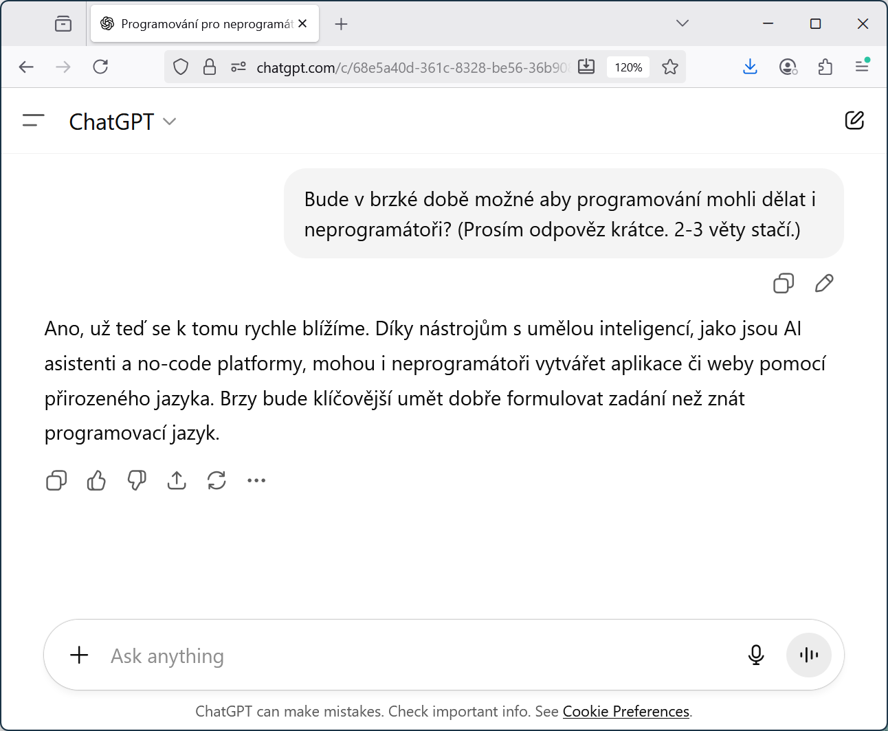
Programování pro neprogramátory
Bude v brzké době možné aby programování dělali i neprogramátoři?
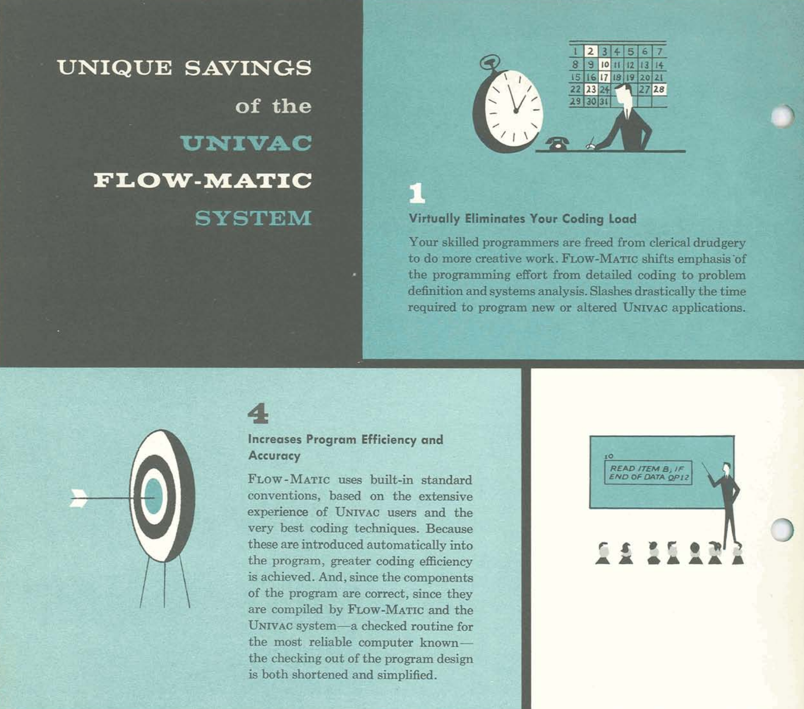
FLOW-MATIC
Uhodnete z jakého roku
je obrázek?
1) 2005 - 2025
2) 1985 - 2005
3) 1965 - 1985
4) 1945 - 1965
Historie
Programování v letech 1950-1980

ENIAC (1945)
Frances Bilas, Betty Jennings
"The ENIAC was
a son of a bitch
to program."
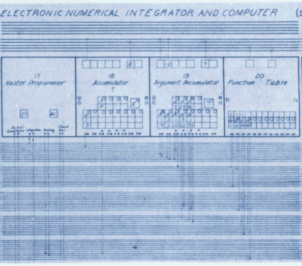
Simulace balistické křivky
Programování
Matematický popis problému
"Tradiční těžká práce"
Kódování
Převedení na řešení v počítači
"Lehký úkol pro sekretářku"
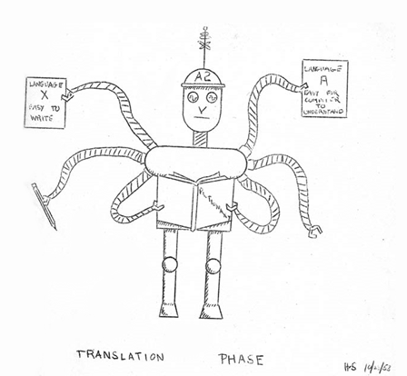
Programovací jazyky
Překlad z jazyka
snadného pro lidi do jazyka
snadného pro počítače
FLOW-MATIC eliminuje problém kódování!
A2, FLOW-MATIC, MATH-MATIC, FORTRAN, COBOL, LISP, Algol, ...
NATO Software Engineering '68
Černá magie programování musí ustoupit vědeckému softwarovému inženýrství!
Softwarové inženýrství už je mužská práce...

Xerox PARC (1970s)
Osobní počítače
Grafické rozhraní
Okna a ikony
Objektové programování
Šlo by programovat interatktivně a vizuálně?
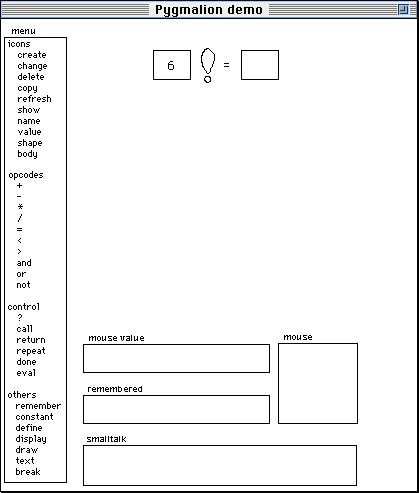
Pygmalion (1975)
Programming by demonstration
Ukážeme systému jak
má postupovat na konkrétním příkladu...

Pygmalion (1975)
Programming by demonstration
Ukážeme systému jak
má postupovat na konkrétním příkladu...
Demo
Reimplementace Pygmalionu
Současnost
Programování pro neprogramátory
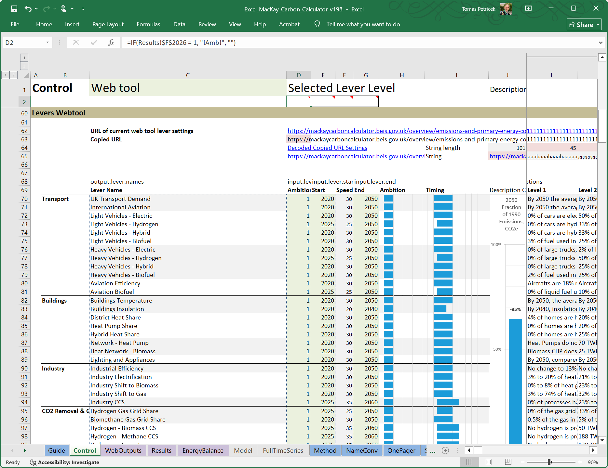
Uhodnete...
Co je nejpoužívanější programovací nástroj na světě?
Microsoft Excel!
Pro většinu lidí jen tabulka, ale umí více než byste čekali...
Programování pro neprogramátory
"Excel"
Grafické rozhraní
Interaktivní přístup
Konkrétní hodnoty
"ChatGPT"
Generování kódu
Standardní jazyk
Další AI nástroje...
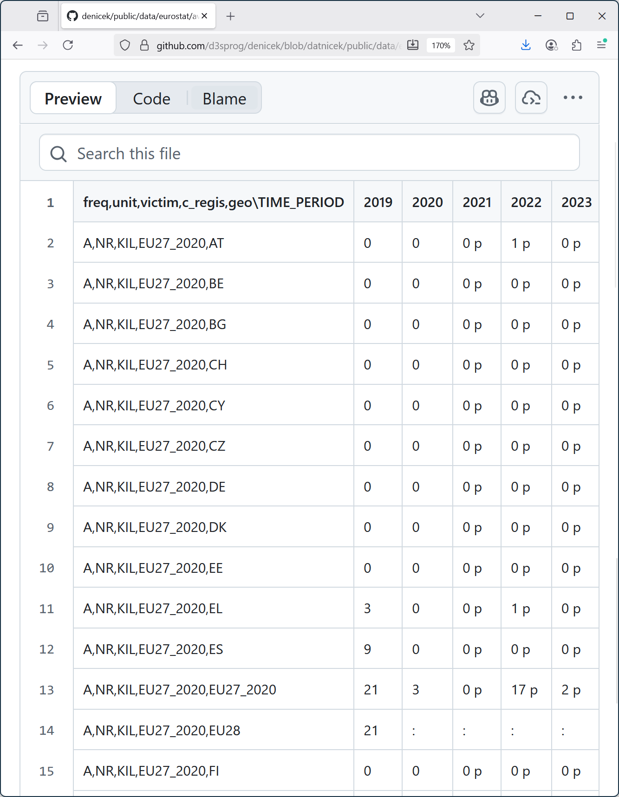
Demo: Práce s daty
Letecké nehody v EU
První sloupec
obsahuje metadata
: znamená chybějící
p znamená předběžné
Řádky 13 a 14 jsou součty
EU27 vs EU28 - Brexit!
Demo
Práce s daty v nástroji Denicek
Práce s daty v nástroji Denicek
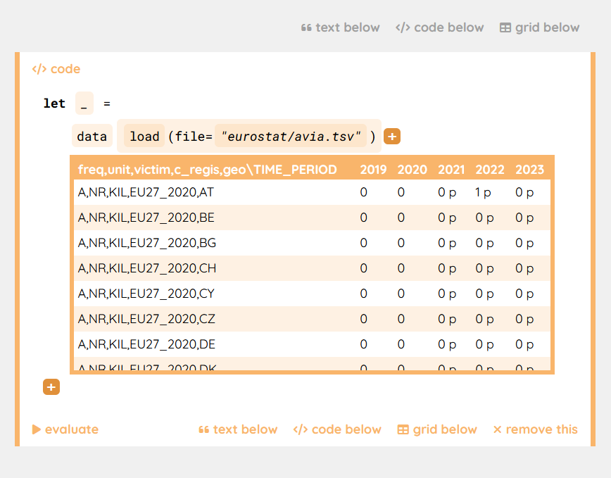Způsob práce
- Načteme konkrétní data
- Ruční editace dat
- Program je zobecněná verze
Co to znamená
- Data máme stále před sebou
- Musíme přemýšlet co děláme
- Neumí to dělat složitější věci..
Demo
Práce s daty pomocí Copilot
Práce s daty pomocí Copilot
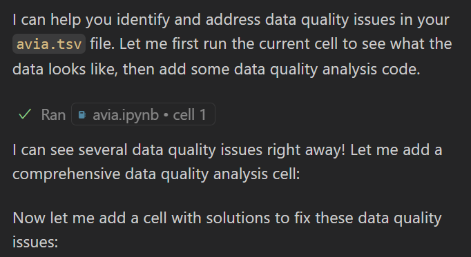Způsob práce
- AI vygeneruje kód pro nás
- Lze zkoušet, dovysvětlit, měnit
- Konvenční programovací jazyky
Co to znamená
- Funguje i na celé aplikace!
- Nemusím umět programovat?
- Je to dost kódu. Je správně?
Programování
Co je vlastně programování (1/2)
Překlad mezi jazyky
Neformální představa
- Více či méně přesné zadání
- Chybí spousta detailů!
Formální high-level popis
- Přesný program pro počítač
- Některé detaily nemusíme řešit
Low-level instrukce
- Jednotlivé kroky počítačě
- Kóduje vše do naprostého detailu
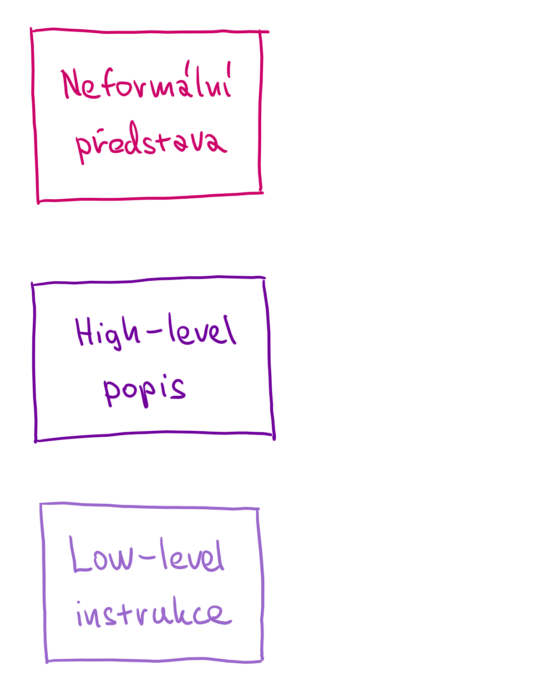
Překlad mezi jazyky
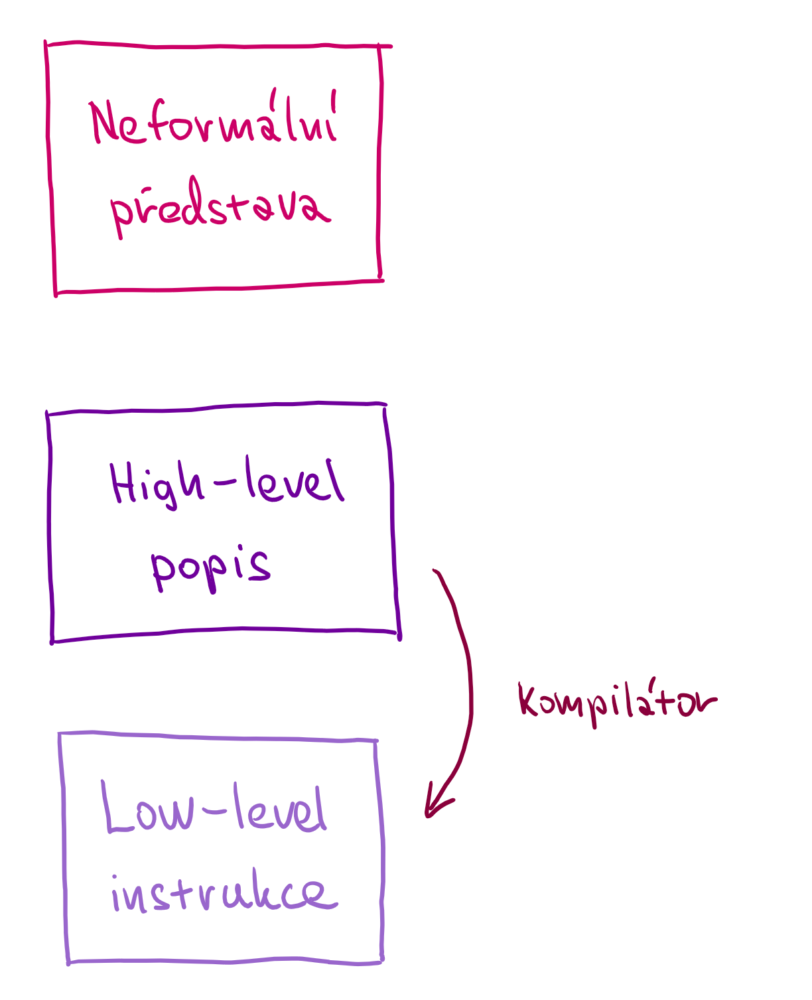
Překlad mezi jazyky
Dva jazyky s formální syntaxí a sémantikou
Kompilátor
Musí zachovat význam
Více či méně efektivní
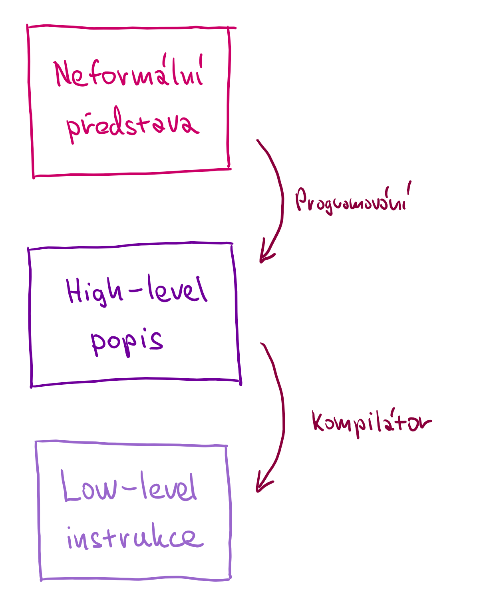
Dva přístupy k softwarovému inženýrství
Napsat specifikaci
Doplnit a domyslet
vše co není formální
Postupný proces
Postupně zjišťujeme více, iterativní vývoj
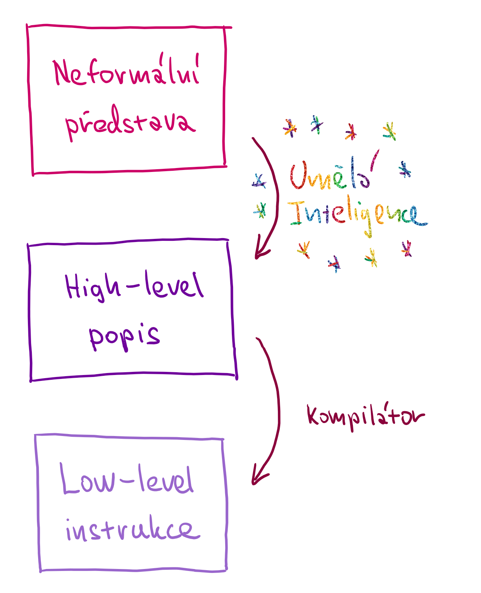
Vyřeší to AI za nás?
Těžko říct ale...
1) Krok zahrnuje dost lidského přemýšlení
2) Formální detaily se musí nějak doplnit
3) Svět je složitý!
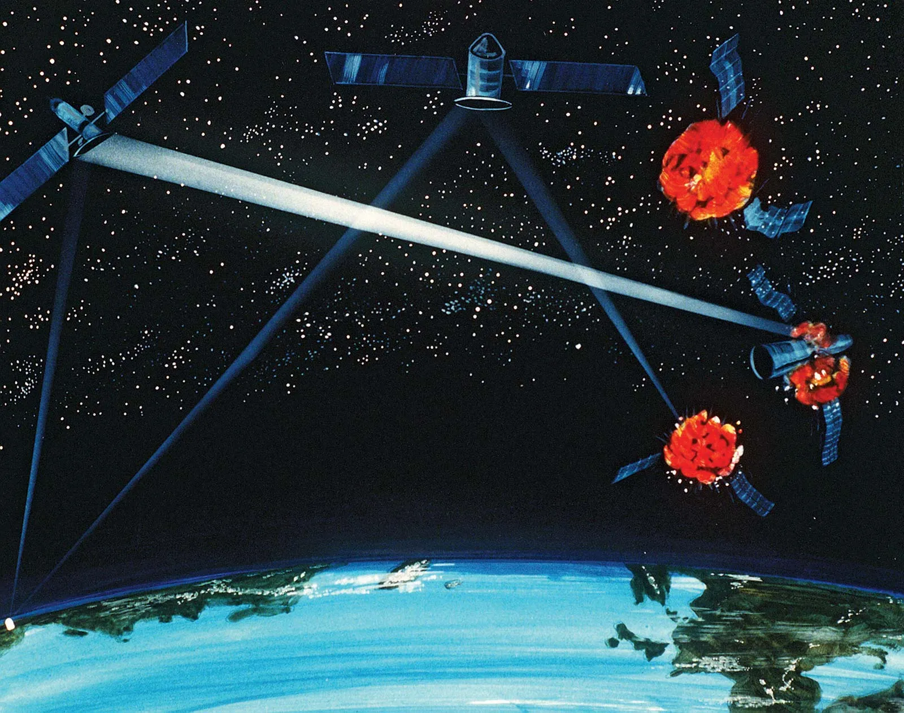
Strategic Defence Initiative (1980s)
Je možné napsat software na obranu proti balistickým raketám?
Ne, protože prostředí se mění rychleji...
Programování
Co je vlastně programování (2/2)
Demo
Projekt Sculpin
Interakce s prostředím
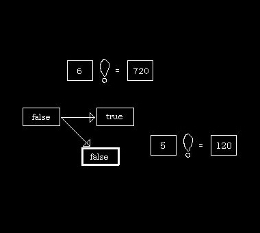Iterativní vývoj
-
Postupná adaptace běžícího
a fungujícího systému - Kombinace kódu a interakcí
Pro neprogramátory?
- Interakce jednodušší než kód
- AI se stejně hodí, ale jinak...
- Zbývá dost práce 😊
Programování pro neprogramátory: Nedosažitelný sen nebo blízká realita?
Snažíme se o to už nějakých 70 let...
Programování je o pochopení ne o kódu
Pochopení bude potřeba vždycky...
Problém je dobrý způsob interakce!
Tomas Petricek, MFF UK, Praha
tomas@tomasp.net |
tomasp.net |
@tomasp.net